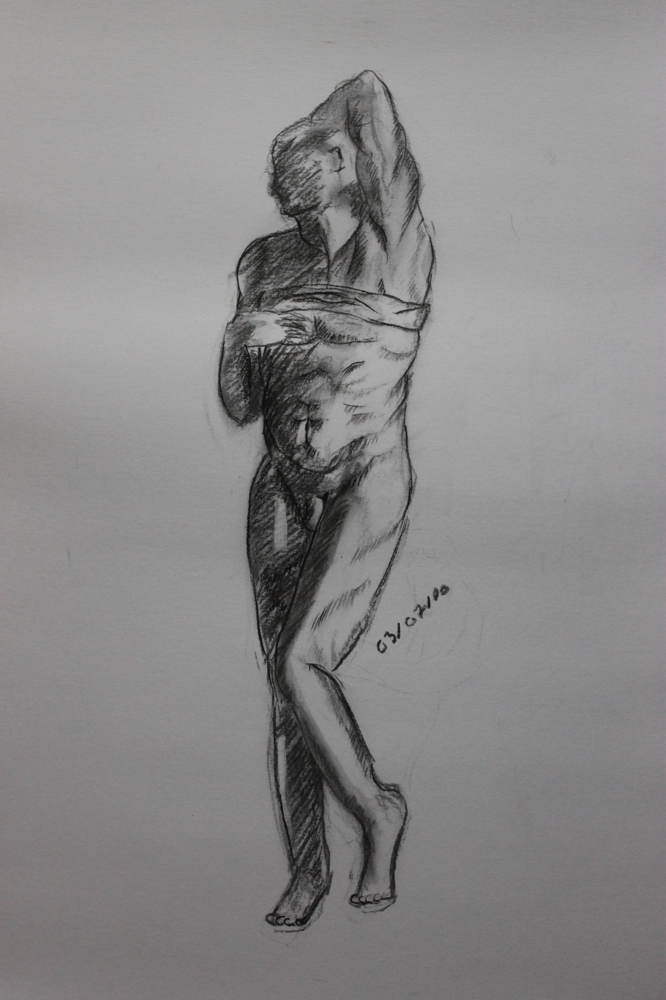
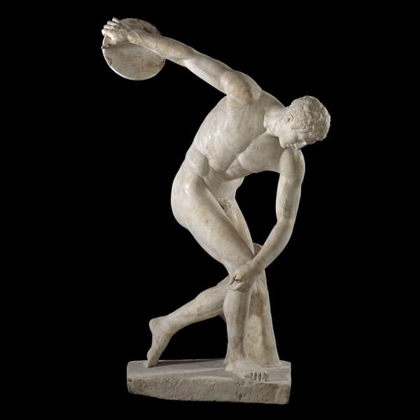

Détails :
type : dessin d'observation
temps : 1 heure
matériel : fusain
Explication :
J'ai réalisé ce dessin lors d'un cours avec un professeur d'art. Nous avions devant nous une statue grecque.
J’avais déjà réalisé des dessins de reproduction mais toujours à partir de photo. Cet exercice m'a demandé une
bonne concentration afin de garder le même angle de reproduction. Le fait que le modèle soit en trois dimensions
m’a permis de mieux comprendre les volumes et les perspectives. Ce fut ma première utilisation du fusain. J’ai
tendance à forcer un peu trop sur les ombres et à étouffer le dessin, mais grâce à une gomme, il est possible
de rendre de la luminosité au dessin.